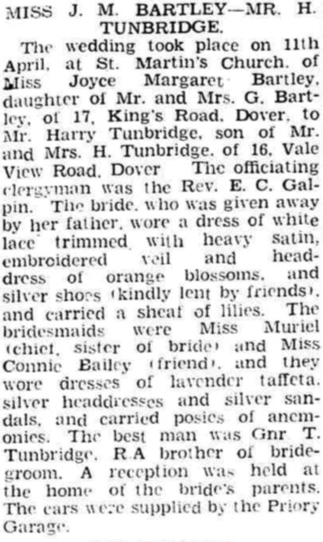
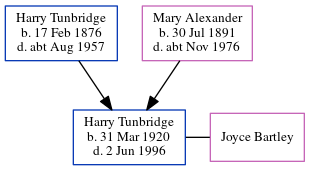

Harry Tunbridge 1920 - 1996
[ Home ] | [ Calendar ] | [ Surnames Index ] | [ Census Index ] | [ Family History ]The child of Harry Tunbridge (a ticket collector) and Mary Alexander, Harry Tunbridge, the second cousin once-removed on the father's side of Nigel Horne, was born in Dover, Kent, England on Mar 31, 19201,2. He married Joyce Bartley at St Martin's Church, 45 Church Road in Dover on Apr 11, 19423. On Jun 19, 1921, he was living at Church Road in Dover4.
He died on Jun 2, 1996 in Canterbury, Kent, England2.
Parents
- Harry was born on Feb 17, 1876
- Mary Norquay was born on Jul 30, 1891
Citations
- England & Wales births 1837-2006 - Findmypast
- England & Wales deaths 1837-2007 - Findmypast
- England & Wales Marriages 1837-2005 - Findmypast
- 1921 Census Of England & Wales - Findmypast (was age 1 and the son of the head of the household)
Media
Dover Express - 17 Apr 1942

Dover Express - 17 Apr 1942
England & Wales marriages 1837-2005 - BMD/M/1942/2/AZ/001466/034
1921 Census of England & Wales - GBC/1921/RG15/04534/0079/05
Family Tree
Generated by ged2site. Last updated on Jun 11, 2024